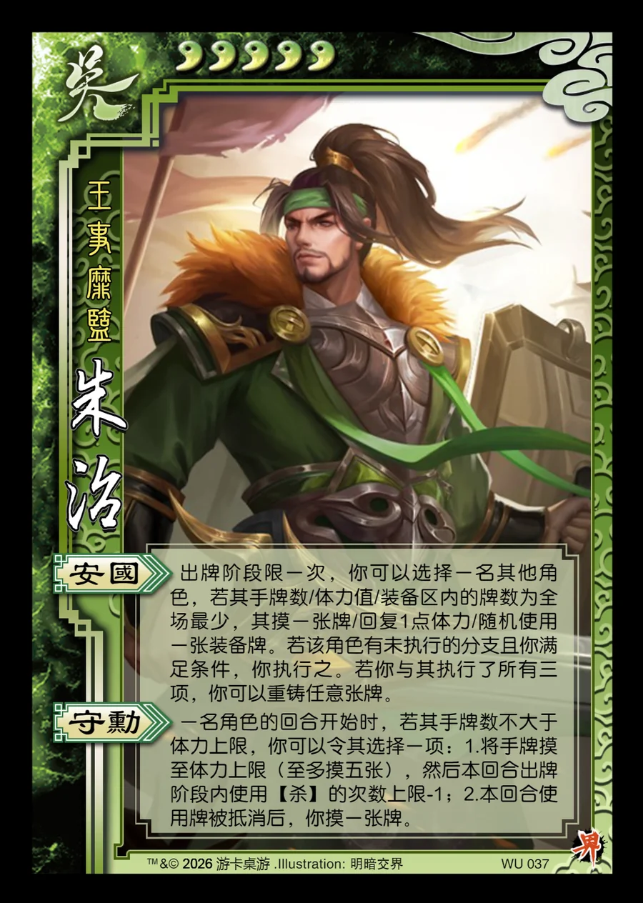

点击卡面查看大图
吴
界朱治
♥5王事靡盬
安国
出牌阶段限一次，你可以选择一名其他角色，若其手牌数/体力值/装备区内的牌数为全场最少，其摸一张牌/回复1点体力/随机使用一张装备牌。若该角色有未执行的分支且你满足条件，你执行之。若你与其执行了所有三项，你可以重铸任意张牌。
守勋
一名角色的回合开始时，若其手牌数不大于体力上限，你可以令其选择一项：1.将手牌摸至体力上限（至多摸五张），然后本回合出牌阶段内使用【杀】的次数上限-1；2.本回合使用牌被抵消后，你摸一张牌。